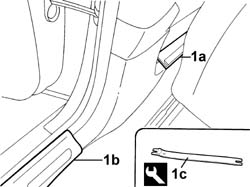
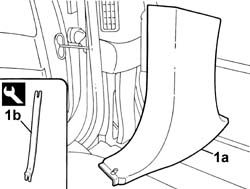

7040H36 CENTRE PILLAR TRIM LOWER ELEMENT (one), left or right - R.R.
- Path
- Procedures > 70 FITTINGS > 7040 BODY INTERIOR UPHOLSTERY AND TRIM > 7040H ROOF PANEL AND PILLAR LINING > 7040H36 CENTRE PILLAR TRIM LOWER ELEMENT (one), left or right - R.R.
- Kind
- repair procedure (removal / refitting; the operation number is the code)
- Applies to
- all engines; all production periods
- Interactive page
- https://sloeber94.github.io/elrnDB-lThss/en/#/458472
Applies to: all engines; all production periods
 Removing
Removing
 Refitting
Refitting1. Release the front running board (1a) and the rear running board (1b) using the tool (1c).
 | Description | Code | Function |
|---|---|---|---|
1c | Knife | 1.878.077.000 | Removing centre pillar cover lower element |

Applies to: all engines; all production periods
1. Release the lower trim (1a) from the retainers using the special tool (1b).
| Description | Code | Function |
|---|---|---|---|
1b | Knife | 1.878.077.000 | Removing centre pillar cover lower element |

Applies to: all engines; all production periods
Refitting
Removing- Check that the trim is not damaged.
- Position the centre pillar lower trim and secure it using the press-fittings.
- Reposition the front and rear running boards until the click of the retaining springs is heard.
Topics that link to this page (14)
- 5505C26 ENGINE COMPARTMENT built in wiring - R.R.
- 5505C41 PASSENGER COMPARTMENT built in WIRING - R.R.
- 5580C40 sensor for side bag (one) lh or rh r r
- 5580C50 Head Bag module (one), left or right - R.R.
- 7030B12 SUN ROOF (assembly) - R.R.
- 7030B46 DRIVE CABLE (one), left or right - R.R.
- 7030B52 Sun roof glass support JOINTS/SLIDES - R.R.
- 7040H16 Roof LINING for versions with sun roof - R.R.
- 7040H38 CENTRE PILLAR TRIM UPPER ELEMENT (one), left or right - R.R.
- 7040H80 REAR PARCEL SHELF - R.R.
- 7040L17 Passenger compartment front floor carpet - R.R.
- 7040L18 Passenger compartment rear floor carpet - R.R.
- 7065A12 FRONT SEAT BELT (ONE), LEFT OR RIGHT, WITH PRETENSIONER ON REEL - R.R.
- 7065A18 HEIGHT ADJUSTER for (one) front seat belt, left or right - R.R.